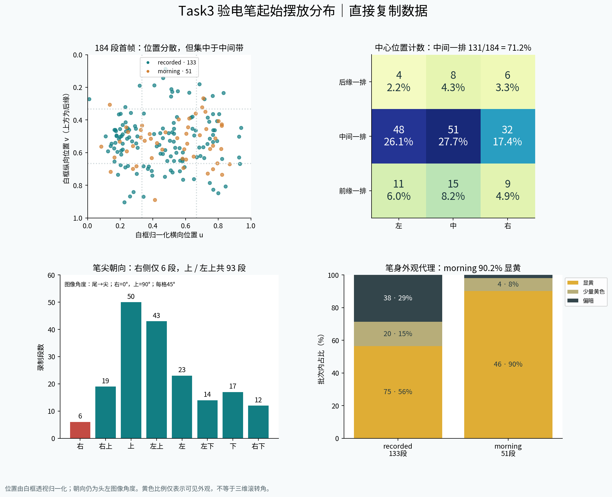
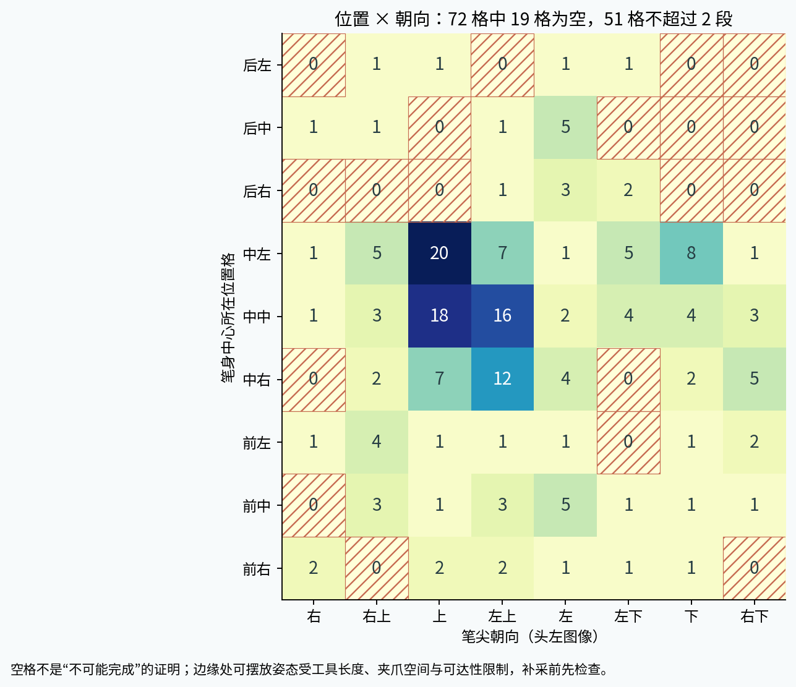
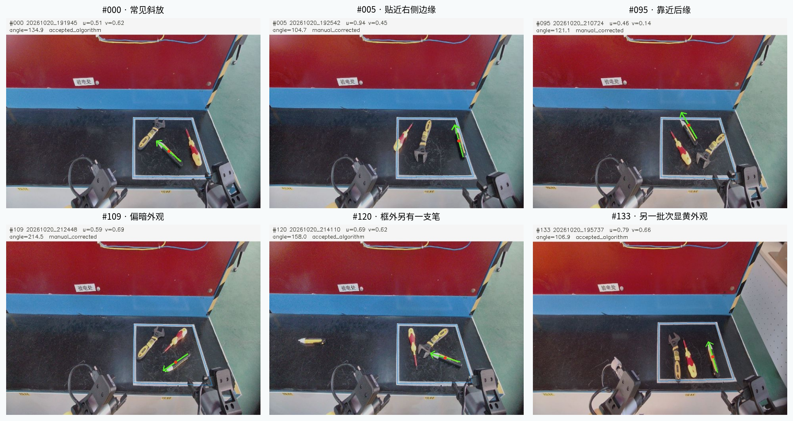

DATA COVERAGE AUDIT · TASK 3 · 2026-10-26
验电笔的摆放是随机的，
但覆盖还不均匀。
重点不是继续增加相似视频，而是补齐后缘位置、稀少朝向及其组合，并让不同笔身外观跨批次出现。
仅分析直接复制的 task3；每段录制计一次。统计对象为白框内可见验电笔，不是所有图像帧，也不是全桌所有工具实例。
184有效录制 · 133 + 51
71.2%中心落在白框中间一排
6 / 184笔尖朝画面右侧 ±22.5°
19 / 72位置 × 朝向组合无样本
先看分布

白框分成 3×3；后缘是图像上侧、靠红色面板的一边。前缘靠机器人。中心位置按四边形透视归一化；角度采用原头左图像的尾→尖方向，右为 0°、上为 90°，不声称是真实桌面偏航角。
| 发现 | 证据 | 意味着什么 |
|---|
| 中间带占多数，后缘少 | 中间一排 131/184；后缘一排 18/184；前缘一排 35/184。 | 随机摆放没有带来均匀的前后覆盖；后左、后右分别只有 4、6 段。 |
| 所有八个方向都有，但数量差距大 | 右 6、右上 19、上 50、左上 43、左 23、左下 14、下 17、右下 12。 | 不能说“没采到反向摆放”；应说右向样本少，上/左上占 50.5%。 |
| 外观与采集批次相关 | 显黄外观：recorded 75/133=56.4%，morning 46/51=90.2%；偏暗外观分别 38 和 1 段。 | 模型可能把批次背景与笔身外观绑定；需要在相同位置/朝向下交替翻面，而非只随机转动。 |
“显黄/偏暗”是笔身采样带的 HSV 黄色比例代理（阈值 0.35、0.10），也受反光、可见侧面及标线误差影响，不是经标定的滚转角或型号分类。
真正薄弱的是组合覆盖

72 个组合里，19 个为 0，51 个不超过 2 段。单独看“位置都有变化、方向也都见过”，会掩盖这些空缺。例如后右格只有左上、左、左下方向，尚未覆盖其余方向。
空格并不自动等于必须补采：验电笔长度、桌边、夹爪间隙和机器人可达性可能限制某些组合。先确定可行区域，再按覆盖表补齐，不能为了填表强行摆放不可达状态。
这对训练后能力意味着什么
| 数据证据 | 需要重点测试的失败模式（推测） | 下一轮怎么采 |
|---|
| 后缘稀疏、位置与朝向组合不均 | 到后缘或角落时接近方向不合适；旋转后的抓取偏移；夹爪与邻近工具/边框干涉。 | 固定可达中心点，系统旋转笔尖方向；优先补空组合与右向，再扩展到安全框外位置。 |
| 显黄与偏暗外观分批集中 | 翻面、暗色面朝上或反光改变时定位/抓取置信度下降。 | 同一中心、同一朝向成对采显黄面与偏暗面；在每个采集批次交错出现。 |
| 首帧几乎是同一桌面、白框和面板；相机初始姿态变化小 | 模型依赖白框、固定像素位置和背景；机器人站位、桌高或头部视角变化时性能下降。 | 在允许范围内改变站位/相机视角、背景与照明；把同样摆放组合跨环境复现。 |
| 主目标通常平躺且笔尖可见；存在框外另一支笔的例子 #120 | 被遮住笔尖、交叉堆放、相似工具并置或两支同类笔时，选错对象或抓取姿态错误。 | 轻度遮挡、交叉、近邻间隙、两支同类工具；明确哪支是目标并记录选择规则。 |
这些是基于数据覆盖的泛化风险，不是已测得的模型失败率。本次首帧分析主要支持“识别/选取/拿取起始工具”的判断，不能评价验电点接触精度、插入深度、验电成功或长程恢复能力。
建议下一轮：约 185 段起步，按缺口采
| 优先级 | 建议数量 | 采集设计 |
|---|
| P0 · 基础覆盖补齐 | 理论最低 113 段 | 把现有 3×3×8 分格补到每格至少 3 段的算术缺口。逐格核实可达性；先补 19 个空格，偏重后缘和右向。实际位置在格内抖动，不重复摆在同一个点。 |
| P1 · 外观与近邻压力 | 48 段 | 24 组匹配对：位置/朝向一致，显黄面与偏暗面各一次；其中穿插近邻工具、轻遮挡、反光和双笔选择。记录目标身份及失败原因。 |
| P2 · 环境变化留出测试 | 24 段 | 在至少 3 个独立采集批次改变允许范围内的站位/视角/光照；预先留出，避免训练后才挑测试样本。 |
113 是格子缺口，不是保证性能的样本量。若某格不可达，应标为不可行并调整工作域。若环境变动也要用于训练，则另外采独立测试集，不能把上述 24 段同时当训练和测试。
下载逐格补采清单 CSV · 现有位置近邻且朝向接近的样本共有 42 对（中心距离 <0.05 框宽、角差 <10°），不是重复视频判定。训练/验证应按录制及相似摆放组划分，不能随机拆相邻帧。
首帧是否合适？检查结果支持这个起点
对每段第 0 张与第 30 张头左图像，在验电笔附近用稀疏光流做前后向一致性检查。184 段均取得至少 5 个有效跟踪点；中位位移的总体中位数约 0.055 像素，最大约 0.956 像素。没有超过 3 像素的样本，说明这批数据的最初约一秒通常尚未移动工具。
跟踪区域含少量周围纹理，这不是逐像素实例分割或完全静止证明；它是支持首帧代表起始摆放的辅助检查。没有把相邻帧重复计入 184 段统计。
检测轴长的中位数约 76 像素；按 640×480 直接缩至 224×224 后约 33 像素。此值只是可见轴长代理，不代表接触细节质量。
代表样本与审阅入口

蓝线为白框，绿色箭头从笔尾指向白色笔尖，红点为轴线中点。所有 184 张检测叠图均已目视复核：138 张保留算法结果，46 张补标或修正。不是独立测试集准确率，也没有把人工修正冒充自动检测。
方法、误差与数据边界
- 输入固定为
cluster_direct_copy/task3，不使用 ModelScope 解压副本，不改写原始数据。批次名称只作目录标签；不把“1025”当作已验证采集日期。 - 184 段均采头左/头右/左腕/右腕首张；头左另取第15、30张用于检查。主统计只使用头左首张，每段等权；首帧 SHA-256 无完全重复。
- OpenCV HSV 颜色连通域、白色笔尖、直线边缘产生候选；Hough 线拟合白框并作透视归一化。深色面容易漏检，故全量审阅并保留原始候选与修正记录。
- 主目标定义为白框内可见验电笔；未从后续动作逐段确认被抓取对象。框外另一支笔不纳入主目标统计，不能据此声称整个桌面没有框外样本。
- 二维轴线中点不是质心或抓取点；图像角度不是标定后的物理偏航角。未获得相机内外参、桌面真实边长或6D姿态真值；不能可靠量化高度、俯仰、滚转及物理间隙。
- 视觉修正误差约数像素，未做独立标注者一致性测量。模拟 u/v ±0.03、角度 ±6° 扰动的敏感性检查中，中间一排为128–135段、右向5–7段、空组合19–24格（500次的5–95百分位）。这是边界敏感性，不是统计置信区间。
- 颜色邻近距离仅为图像代理，不等于遮挡、碰撞或真实接触。本报告未给出模型成功率，也未进行训练。